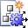
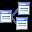

Visual Studio Image Library: Actions (32-Bit, .bmp Format, 32x32)
32-Bit Art
This is 32-bit art that contains an alpha channel for transparency.
Use Restrictions
Action icons are used to represent commands in the menu structure. These are
most often action verbs, but sometimes are nouns (objects or tools) with actions
associated with them, such as Hide or Show. As part of a visual language, the following images
(or any part of the images) should be
used consistent with, although not necessarily identical to, the usage described
below:
| Image | File Name | Usage |
|---|---|---|
| AddTableHH.bmp | Add a new table | |
| ArrangeWindowsHH.bmp | Arrange windows horizontally | |
| AttachmentHH.bmp | Launch a dialog to browse for a file to attach | |
| ClosePreviewHH.bmp | Close the preview view | |
| Color_fillHH.bmp | Choose a color to fill the selected area | |
| Color_lineHH.bmp | Choose a color for a line | |
| CopyHH.bmp | Copy to the clipboard | |
| CropHH.bmp | Trim the picture | |
| Delete_tableHH.bmp | Delete table | |
|  | EntityDataModel_NewEntityModelService.bmp | Create a new Entity Model Service |
| FindHH.bmp | Search, or find. May open a dialog or act on an input field. | |
| FullScreenHH.bmp | Go into visible mode which maximizes real estate for viewing or editing | |
| FunctionHH.bmp | Define a function | |
| GraphHH.bmp | Insert or display a graph | |
| HighlightHH.bmp | Mark elements or words with highlight | |
| HomePageHH.bmp | Home (web) | |
| InsertPictureHH.bmp | Launch a dialog to browse to an existing picture to insert | |
| LandscapeHH.bmp | Document contents displayed in horizontal format | |
| MoveToFolderHH.bmp | Move the selected file to a specific folder | |
| MultiplePagesHH.bmp | Display multiple pages at once | |
| NewClassModuleHH.bmp | Create a new class module | |
| OpenHH.bmp | Launch a dialog to browse to an existing item to open | |
| OpenPH.bmp | Launch a dialog to browse to an existing item to open (no alpha channel) | |
| PasteHH.bmp | Paste from clipboard | |
| PieChart3DHH.bmp | Display or insert a piechart | |
| PortraitHH.bmp | Document contents displayed in vertical format | |
| PortraitLandscapeHH.bmp | Change page orientation to horizontal format | |
| PrintHH.bmp | Send fine to printer | |
| PrintPreviewHH.bmp | Launch UI to allow for previewing printer results | |
| PrintRelationshipsHH.bmp | Print relationships between tables or elements | |
| PropertiesHH.bmp | Display properties of selected element in a grid or general properties box | |
| ProtectDocumentHH.bmp | Lock document from changes | |
| ProtectFormHH.bmp | Lock form from changes | |
|  | RelationshipsHH.bmp | Show relationships between tables or elements |
| SaveAsHH.bmp | Save document with another name | |
| SaveFormDesignHH.bmp | Save design details | |
| SaveHH.bmp | Save changes in current element or file | |
| TaskHH.bmp | Object: task or display list of tasks | |
| WebInsertHyperlinkHH.bmp | Insert a hyperlink | |
| WebPagePreviewHH.bmp | Preview the current web page | |
| WebRefreshHH.bmp | Refresh document contents | |
| ZoomHH.bmp | Generic zoom: launch dialog or cascade to allow for choosing zoom aspect |